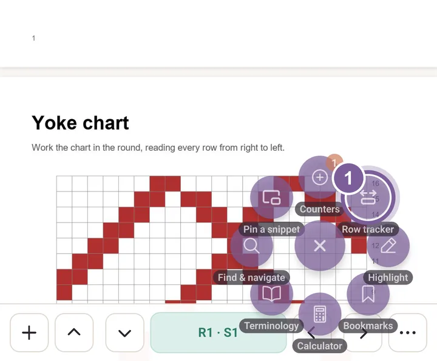
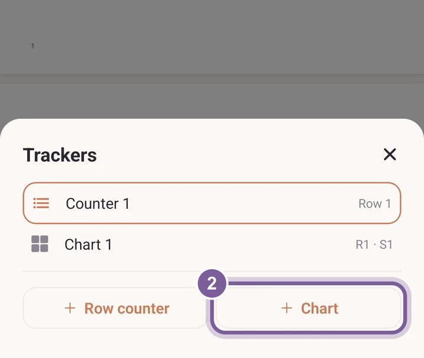
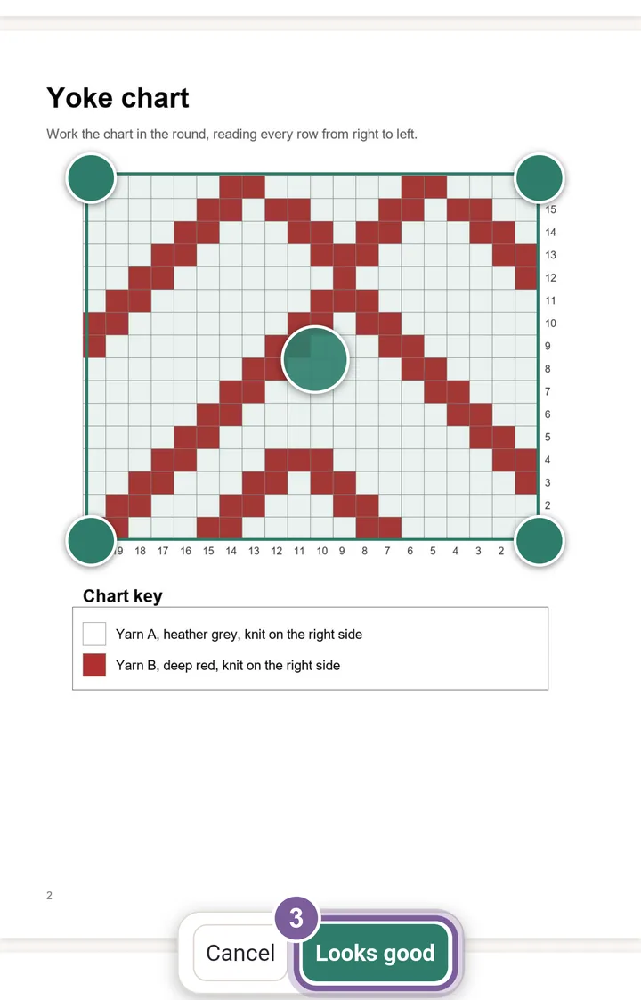
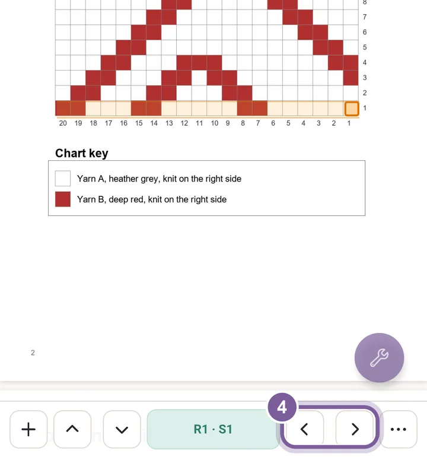

Follow a chart
Follow a printed chart in a PDF pattern, stitch by stitch. Purl lights up the stitch you are on and keeps your place.
Open a PDF pattern, tap the round tool button, then tap Row tracker.

Row tracker holds both the row band and the chart tracker. In Trackers, tap Chart.

To get back to this sheet later, tap the plus at the left of the bar. Drag the box's corners over the printed chart and tap Looks good. Then type the Stitches across and the Rows, and tap Save grid.

Pinch to zoom the page if the chart is small. Step stitch by stitch with the side arrows.

The bar reads R1 · S1: row 1, stitch 1. The up and down arrows step rows.
More in PDF tools, under Chart tracker.